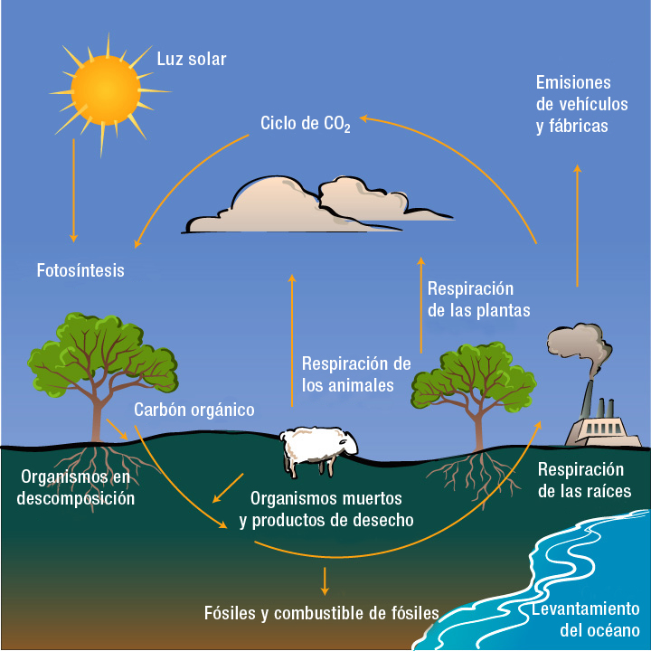

Ciclo de Carbono
Es uno de los elementos más importantes de la naturaleza. Combinado con oxígeno forma dióxido de carbono y monóxido de carbono. La atmósfera contiene alrededor de 0.03 % de dióxido de carbono. Es el elemento básico de los compuestos orgánicos (hidratos de carbono, lípidos, proteínas y ácidos nucleicos). El carbono también forma parte de sales llamadas carbonatos, como el carbonato de sodio y el carbonato de calcio, entre otras. El carbono, como dióxido de carbono, inicia su ciclo de la siguiente manera: Durante la fotosíntesis, los organismos productores (vegetales terrestres y acuáticos) absorben el dióxido de carbono, ya sea disuelto en el aire o en el agua, para transformarlo en compuestos orgánicos.
Los consumidores primarios se alimentan de esos productores utilizando y degradando los elementos de carbono presentes en la materia orgánica. Gran parte de ese carbono es liberado en forma de CO2 por la respiración, mientras que otra parte se almacena en los tejidos animales y pasa a los carnívoros (consumidores secundarios), que se alimentan de los herbívoros. Es así como el carbono pasa a los animales colaborando en la formación de materia orgánica.
Los organismos de respiración aeróbica (los que utilizan oxígeno) aprovechan la glucosa durante ese proceso y al degradarla, es decir, cuando es utilizada en su metabolismo, el carbono que la forma se libera para convertirse nuevamente en dióxido de carbono que regresa a la atmósfera o al agua. 4 Los desechos de las plantas, de los animales y de restos de organismos se descomponen por la acción de hongos y bacterias. Durante este proceso de putrefacción por parte de los descomponedores, se desprende CO2. En niveles profundos del planeta, el carbono contribuye a la formación de combustibles fósiles, como el petróleo. Este importante compuesto se ha originado de los restos de organismos que vivieron hace miles de años.
Durante las erupciones volcánicas se libera parte del carbono constituyente de las rocas de la corteza terrestre. Una parte del dióxido de carbono disuelto en las aguas marinas ayuda a determinados organismos a formar estructuras como los caparazones de los caracoles de mar. Al morir, los restos de sus estructuras se depositan en el fondo del mar. Con el paso del tiempo, el carbono se disuelve en el agua y es utilizado nuevamente durante su ciclo. Los océanos contienen alrededor del 71% del carbono del planeta en forma de carbonato y bicarbonato. Un 3% adicional se encuentra en la materia orgánica muerta y el fitoplancton. El carbón fósil representa un 22%. Los ecosistemas terrestres, donde los bosques constituyen la principal reserva, contienen alrededor del 3-4% del carbono total, mientras que un pequeño porcentaje se encuentra en la atmósfera circulante y es utilizado en la fotosíntesis.
